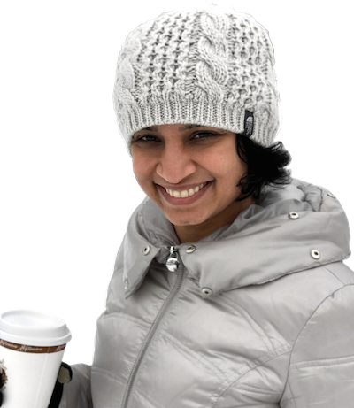

|
I am a PhD candidate at Image, Video and Usabilty (IVU) Lab, Arizona State University, Tempe under Dr. Lina J. Karam. My research interests include image/video processing, machine/deep learning and computer vision with PhD thesis on objective analysis of perceptual quality for reconstructed background images. Through various internships, I gained experience working on augmented reality, assisted driving systems, object detection & tracking and video genre classification. I also have prior industrial experience working as a software engineer for over 3 years. I love to travel, explore local food & cultures and enjoy outdoor activities such as hiking, biking and scuba diving. |
 |
Education
2012 - CurrentArizona State University PhD in Electrical Engineering 2007 - 2008 University of Southern California M.S. in Electrical Engineering 2003 - 2007 Pune University (Vishwakarma Institute of Technology) B.E. in Electronics Engineering |
Experience
Aug 2016 - Oct 2016Sharp Laboratories of America Research and Development Intern (Pedestrian Detection Algorithms) Jan 2014 - May 2014 Intel Corporation Software Engineering Intern (Driver Awareness Systems) May 2013 - Aug 2013 Intel Corporation Software Engineering Intern (Augmented Reality) Feb 2009 - Nov 2011 Intel Corporation Graphics Engineer (Video Post-processing) Jun 2008 - Dec 2008 Intel Corporation Software Validation Intern (Streaming Video Pipeline) |